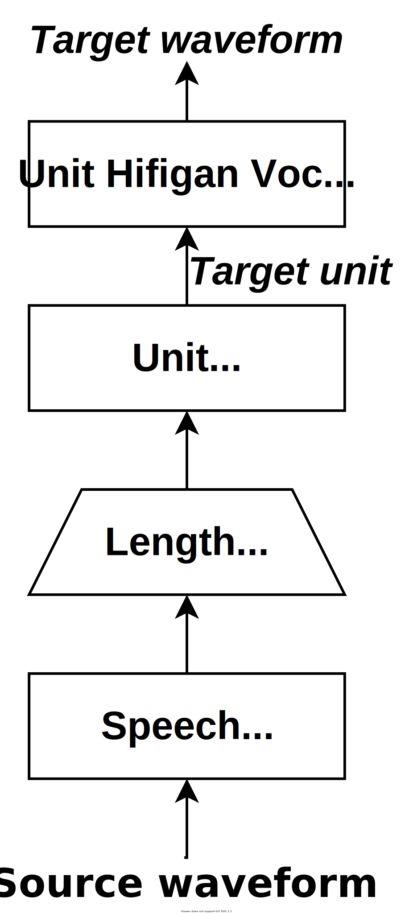

The MineTrans System for IWSLT 2023 Speech-to-Speech Translation Task
[Paper] [Code]
Yichao Du, Zhengsheng Guo, Jinchuan Tian, Zhirui Zhang, Xing Wang, Jianwei Yu, Zhaopeng Tu, Tong Xu and Enhong Chen
MINE Research Group, University of Science and Technology of China
State Key Laboratory of Cognitive Intelligence & Tencent AI Lab
This demo presents the MineTrans English-to-Chinese speech translation systems developed for Speech-to-Speech Translation (S2ST) track of IWSLT 2023. In this track, we explore a speech-to-unit (S2U) framework to build an end-to-end S2ST system. This system encodes the target speech as discrete units via our trained HuBERT. Then it leverages the standard sequence-to-sequence model to directly learn the mapping between source speech and discrete units without any auxiliary recognition tasks (i.e., ASR and MT tasks). Various efforts are made to improve the MineTrans's performance, such as acoustic model pre-training on large-scale data, data filtering, data augmentation, speech segmentation, knowledge distillation, consistency training, model ensembles, etc.
This page is for research demonstration purposes only.
Contents
Model Overview

Figure. Overview of MineTrans S2ST System. This system encodes the target speech as discrete units via our trained HuBERT. Then it leverages the standard sequence-to-sequence model to directly learn the mapping between source speech and discrete units without any auxiliary recognition tasks (i.e., ASR and MT tasks)
English-to-Chinese Speech-to-Speech Translation
Dev Set 1
- This Dev set is split from the training set of GigaSS, which is not involved in training and is only used for selecting models
- The target language (Chinese) speech of the GigaSS training set is constructed from MT+TTS
| English Speech | MineTrans | Chinese Ground Truth |
|---|---|---|
and that that part is an innovation i think in terms of collecting the information. |
我认为这部分是在收集信息方面的创新。 |
我认为这部分是收集信息方面的创新。 |
it results from the expression of an organism's genes and the influence of environmental factors. |
它是由生物体基因的表达和环境因素的影响的结果。 |
它是生物体基因表达和环境因素影响的结果。 |
so we're not going back to that but i think there is something in the middle that makes more sense, that's more sensitive to local culture, local ecology. |
所以我们不会回到那个话题，但我认为中间有一些更有意义的东西，对当地文化、当地生态更敏感。 |
所以我们不会回到那个话题，但我认为中间有一些东西更有意义，对当地文化、当地生态更敏感。 |
smelling bad smells, seeing dreadful sights, hearing woful tales |
闻到难闻的气味，看到可怕的景象，听到悲惨的故事， |
闻到难闻的气味，看到可怕的景象，听到悲惨的故事， |
it can also be a good thing to use several different cameras because it it can actually make it more engaging. |
使用几个不同的相机也是一件好事，因为它实际上可以使其更吸引人。 |
使用几个不同的相机也是一件好事，因为它实际上可以让它更吸引人。 |
this is also part of the reason why, in the years after their introduction, you would often see vending machines in these places giving back dollar coins the government just really wanted people to use these coins. it was classic government just shoving their extra special coins down our throats the problem, though, was that the public didn't like them no matter if they were in their throats or not. |
这也是为什么在它们推出后的几年里，你经常在这些地方看到自动售货机回馈美元硬币政府只是真的希望人们使用这些硬币。这是典型的政府只是把他们额外的特殊硬币塞进我们的喉咙里问题是，不管它们是否在喉咙里，公众都不喜欢它们。 |
这也是为什么在它们推出后的几年里，你会经常在这些地方看到自动售货机回馈美元硬币政府只是真的希望人们使用这些硬币。这是典型的政府只是把他们额外的特殊硬币塞进我们的喉咙里问题是，不管它们是否在喉咙里，公众都不喜欢它们。 |